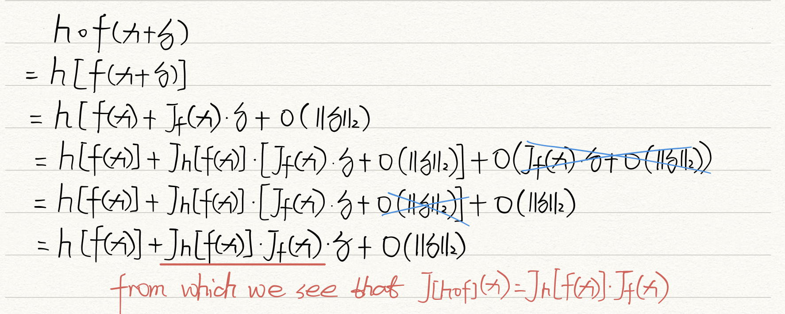
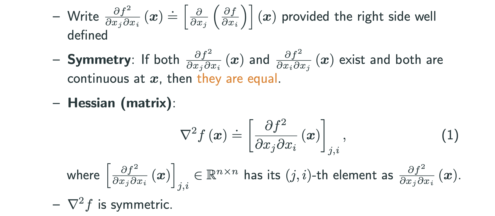
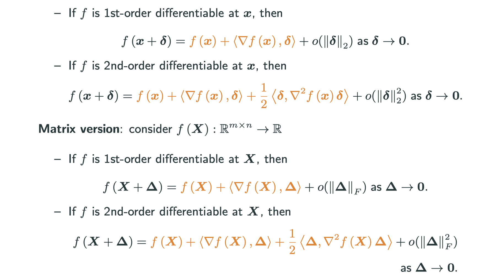
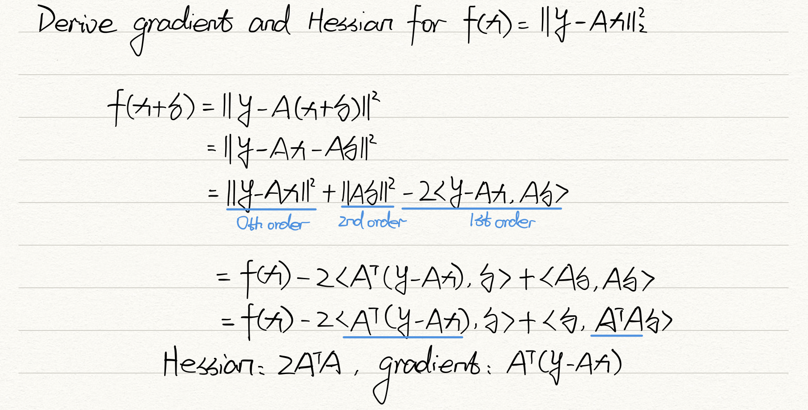
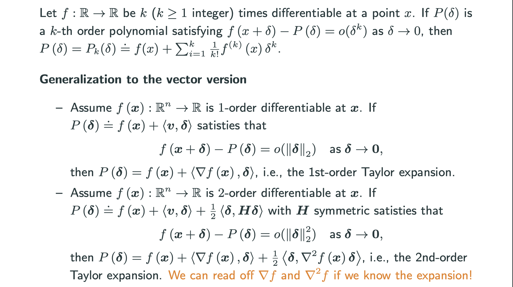
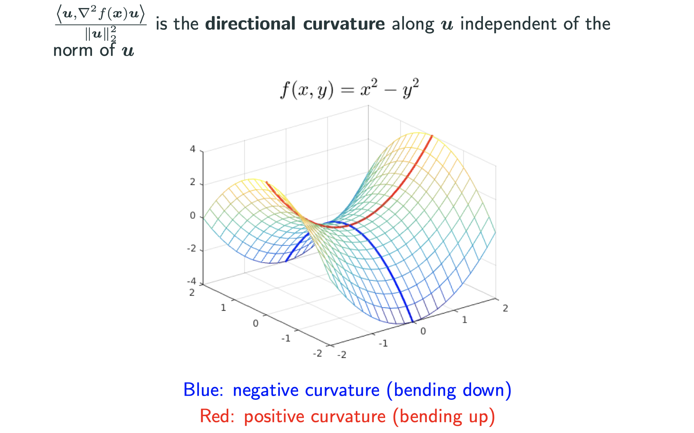

Math that you need to know for Deep Neural Networks
Acknowledgement: This course (CSCI 8980) is being offered by Prof. Ju Sun at the University of Minnesota in Fall 2020. Pictures of slides are from the course.
MATH for DNN
Our notation:
The notation in machine learning is not standardized, but this course tends to use the most generally-used notation in machine learning.
- scalars:
, vectors:
, matrices:
, tensors:
, sets:
- vectors are always column vectors, unless stated otherwise
:
-th element of
:
-th element of
:
:
-th column of
: real numbers,
: positive reals,
: space of
-dimensional vectors,
: space of
matrices,
: space of
tensors, etc
Differentiability – first order
The definition of differentiability needs to be different in higher dimensional spaces than what is taught in calculus courses. A function is differentiable in higher dimensional space if, for a small perturbation in the input, the function’s value change is linear with respect to that perturbation with some lower-order term.
Consider
- Definition: a function is first-order differentiable at a point
such that
is called the (Frechet) derivative.
When,
(i.e.,
) called gradient, denoted as
. For general
, also called Jacobian matrix, denoted as
.
- Calculation:
- Sufficient (but not necessary) condition for differentiability: if all partial derivatives exist and are continuous at
is differentiable at
Calculus rules
Many of the rules are similar to the lower-dimensional analogue. However, one rule to pay attention to is the Chain rule. Discussion of this will come after the definition of these rules.
Assume are differentiable at a point
.
-
linearity:
is differentiable at
-
product: assume
is differentiable at
-
quotient: assume
,
is differentiable at
-
Chain rule: Let
and
, and
is differentiable at
and
is differentiable at
. Then,
is differentiable at
When ,
The thing to note with the chain rule is that when you take the Jacobian of the composition of two matrices, you need to multiply the Jacobian matrices of each. However, when you take the gradient of the composition of two matrices, you need to reverse the order and appply the proper transpose. This is because the gradient is already the transposed form of the first derivative.
First-order differentiable at a point if there exists a matrix
such that
- to prove the chain rule for

Differentiability – second order
Consider and assure
is 1st-order differentiable in a small ball around around

Taylor’s theorem
Vector version: consider

Gradient always the same form as the variable. In matrix version, we replace L2 norm with frobenius form, which is a generlization of L2 norm in matrix space. The difference of second order and first order is that second-order has a extra Hessian.

before: gradient, Hessian Taylor Espansion
now: Taylor Espansion gradient, Hessian
Taylor approximation – asymptotic uniqueness

Directional derivatives and curvatures
Consider
- directional derivative:
- When f is 1-st order differentiable at x
- Now
, what is
?
- When
,
